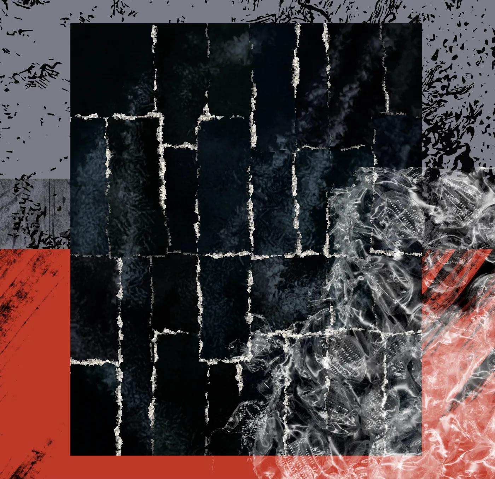
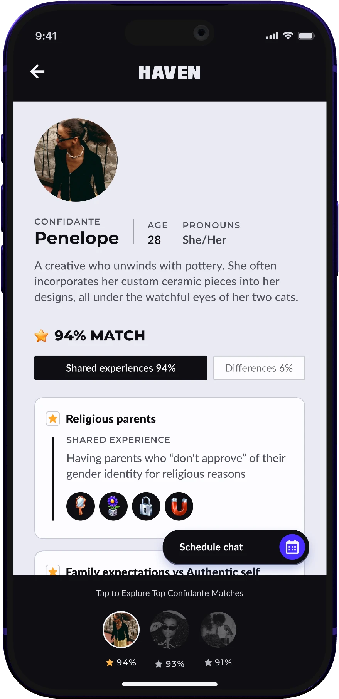
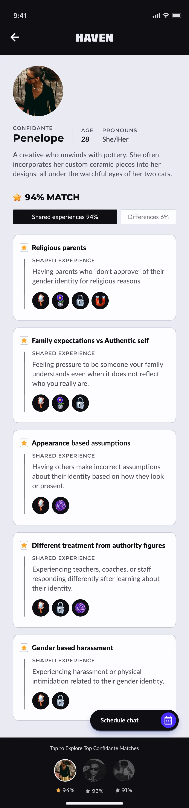
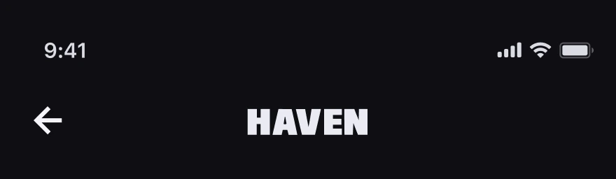
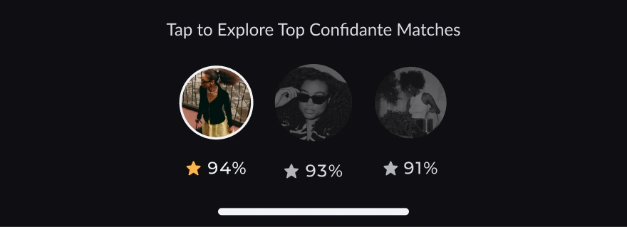

Confidante profile scroll
Your mockup, straightened. The scroll now behaves like a thumb on the glass: short drags that track the finger, then momentum that coasts and slows the way iOS does, uneven pauses to read, a small scroll back to reread and a flick back to the top that bounces. It only covers the first few shared experiences.
A. Scroll physics only





B. Scroll physics with a fingertip